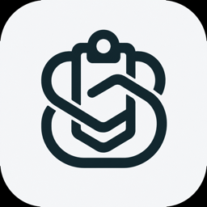
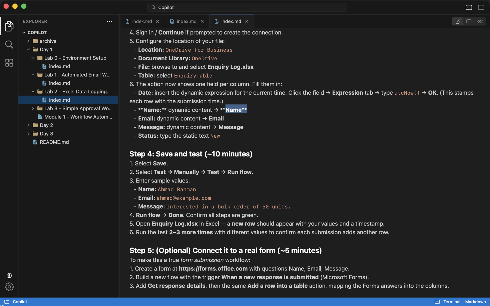
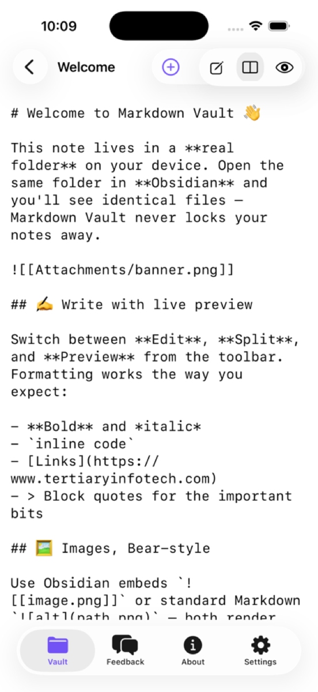
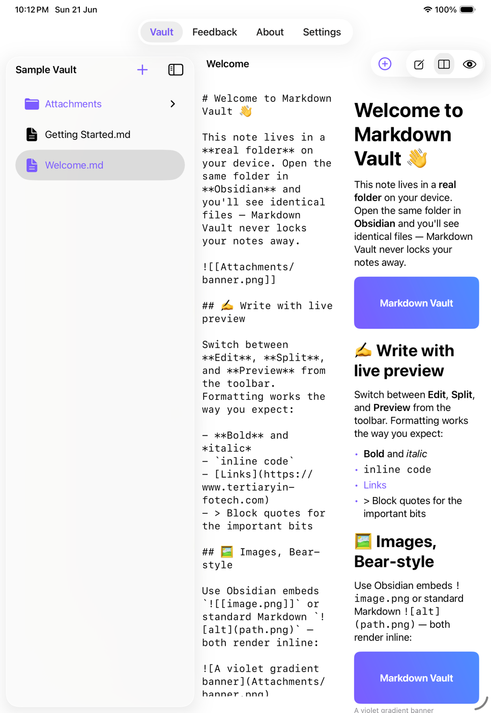

01
Quick Paste from anywhere.
Paste an article, a thread, a quote, a URL, or a snippet into ClipNest without breaking your flow.
⌘ Quick Paste

ClipNestQUICK PASTE · AI NOTE SORTING · OBSIDIAN
Quick Paste brings in your clipboard, AI sorts it into the right notebook, and you can keep working with the same content directly in Obsidian.

One shortcut from clipboard to the notebook where it belongs.
FROM CLIPBOARD TO NOTEBOOK
ClipNest keeps the handoff short: capture the clipboard, let AI file the note, then open the same content in Obsidian.
Paste an article, a thread, a quote, a URL, or a snippet into ClipNest without breaking your flow.
AI creates a title, summary, tags, and classification, then routes the note to the notebook/category it belongs in.
The same plain Markdown files stay in your vault, so you can open the folder in Obsidian and keep editing the content there.
THE WORKSPACE, YOUR WAY
Quick Paste gets the clipboard into a note; the rest of the workspace stays ready for Obsidian.
Move from source to rendered note without losing your place.
Create, rename, and sort notes into folders.
Open the same vault content without export or conversion.

ONE VAULT. THREE SCREENS.
Quick Paste on iPhone, a roomier split view on iPad, and a full vault workspace on Mac — all working on the same files.

THE IMPORTANT PART
ClipNest reads and writes ordinary Markdown files and lets you work directly with the same vault Obsidian uses. No export. No duplicate copy.
MAKE ROOM FOR THE NEXT GOOD IDEA
From clipboard to notebook to Obsidian, ClipNest keeps the useful part of the workflow close at hand.
Follow the build on GitHub Quick Paste · AI notebooks · Obsidian · SwiftUI